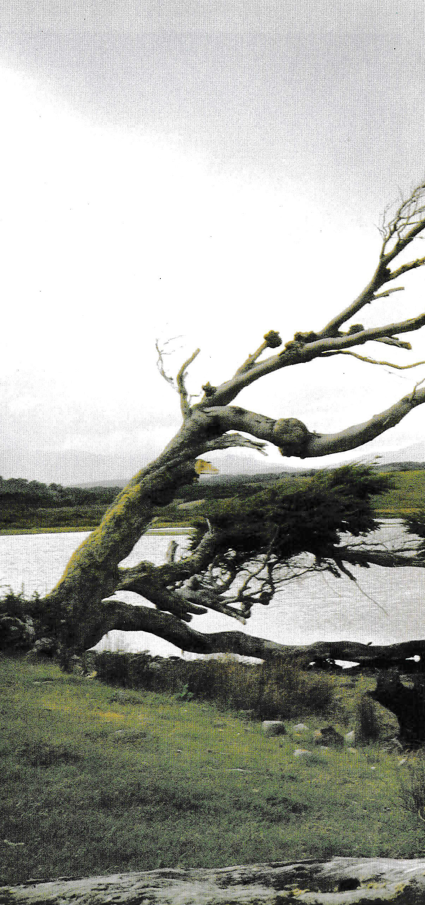
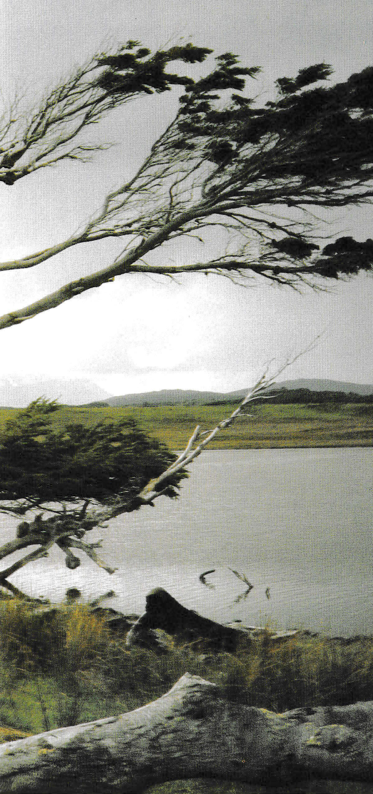

Please view
https://andrewsmr2.github.io/one-thousand-words/
on a laptop / desktop computer.
Thanks!

Resource Library / Sources
-
Alt Text as Poetry
- Really lovely project by Bojana Coklyat and Shannon Finnegan. Encourages people to put more care and attention into alt text / image description - going further than just "checking a compliance box" and moreso trying to build richer digital spaces for screen reader users - ones that would not only make them feel welcome, considered, and included but the idea is to create spaces that screen reader users would actually want to spend time in.
-
Alt Text Hall of Fame
- Project by Stefan Bohacek, made with other contributors including: Tarek Hoteit, Stéphane Deschamps, Spyia, Thain, and Aitor.
-
How to write alt text and image descriptions
- article by Veronica Lewis / Veronica With Four Eyes.
-
How to write an image description
- Article written by Alex Chen, written with insights from Bex Leon and Robin Fanning for Medium.com.
-
Write helpful Alt Text to describe images
- Article from Digital Accessibility Services at Harvard University.
-
Alternative Text
- Article from WebAIM, which stands for Web Accessibility in Mind. WebAIM is a widely respected organization that focuses on digital accessibility. They offer all sorts of helpful tools such as this color contrast checker where you can check to see if a pair of colors has enough contrast between them in order to be accessible.
They also have this really neat tool called WAVE which is an accessibility evaluation tool that you can use to check your website for accessibility errors / issues. You can simply copy and paste your published website URL on this website, and the WAVE tool will point out accessibility errors / concerns and you can even read more about what they mean. You can also add it as a browser extension so that you can access the WAVE tool quickly.
- Article from WebAIM, which stands for Web Accessibility in Mind. WebAIM is a widely respected organization that focuses on digital accessibility. They offer all sorts of helpful tools such as this color contrast checker where you can check to see if a pair of colors has enough contrast between them in order to be accessible.
-
Alt-Texts: The Ultimate Guide
- Article written by Daniel Göransson, who is a web developer and screen reader user.
-
An alt Decision Tree
- A tutorial provided by the W3C Web Accessibility Initiative (WAI) that helps guide you through the thought process of writing alt text, through the form of a decision tree.
-
Alt Text and Image Description
- Article from SeeWriteHear.
-
How to write great alt text — And why it matters
- Article by Pamela S. Hogle and Deni Elliott.
-
Alt Text
- Article from DigitalVA's Accessibility Guide.
-
Accessibility Tip #2: Writing Good Alt Text
- Blog entry by Paul Dagnall, written for University of Dayton Blogs.
(Click on GIF to pause)
GIF description: Looney Tunes ending credits. The words "That's all, folks!" appear in white, cursive letters in front of a circular, black and red background.
*** DISCLAIMER: I did not take the photos that I've used in this website. Most of them are scans of photos found in magazines (a few of them were found in books). I do not take credit for any of the photography displayed in this website. ***
